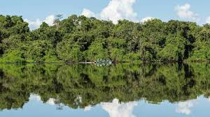

Parque Nacional do Jalapão
Por que é imperdível: Um dos maiores destinos de ecoturismo do Brasil, com paisagens deslumbrantes de dunas de areia dourada, cachoeiras e fervedouros (poços de água cristalina). O Jalapão é perfeito para quem busca aventura e contato direto com a natureza. Destaques: Dunas de areia dourada, Fervedouro do Ceiça, Fervedouro de Bom Jardim e Cachoeira da Formiga.
Fervedouros do Jalapão
Por que é imperdível: São poços de água cristalina onde a pressão da água impede que você afunde, fazendo com que flutue na água. Uma experiência única e inesquecível. Destaques: Fervedouro do Ceiça e Fervedouro de Bom Jardim.
Cachoeira da Formiga (Jalapão)
Por que é imperdível: Uma das cachoeiras mais conhecidas do Jalapão, com águas cristalinas e uma paisagem deslumbrante. Ideal para um banho refrescante e fotos incríveis. Destaques: Banho em águas cristalinas e paisagens espetaculares.
Ilha do Bananal
Por que é imperdível: A maior ilha fluvial do mundo, um paraíso ecológico, com rica biodiversidade e comunidades indígenas. É um ótimo local para passeios de barco e observação da fauna e flora. Destaques: Ecoturismo, observação de animais e contato com as culturas indígenas.
Lago de Palmas e Praia do Prata
Por que é imperdível: O Lago de Palmas é uma excelente opção para quem busca lazer em águas tranquilas e práticas de esportes aquáticos. A Praia do Prata, com suas águas claras e quentes, é ideal para relaxamento. Destaques: Praia do Prata e esportes aquáticos no Lago de Palmas.
Palácio Araguaia - Palmas
Por que é imperdível: O Palácio do Governo, em Palmas, é um marco histórico e arquitetônico da capital do estado. Oferece uma vista panorâmica da cidade e do Rio Tocantins. Destaques: Arquitetura moderna e vista panorâmica.
Serra do Espírito Santo (Jalapão)
Por que é imperdível: Um dos pontos mais altos do Jalapão, oferece uma vista incrível da região. Ideal para trilhas e caminhadas em meio à natureza. Destaques: Trilhas e vistas panorâmicas.
Parque Estadual do Cantão
Por que é imperdível: Uma área de preservação rica em fauna e flora, sendo um ótimo local para passeios de barco, observação de aves e vida selvagem. Destaques: Passeios de barco, observação de fauna e flora.
Praia do Canto (Palmas)
Por que é imperdível: Uma das praias mais conhecidas da capital, localizada no Lago de Palmas, com opções de lazer e esportes aquáticos. Destaques: Lazer em água doce e esportes náuticos.